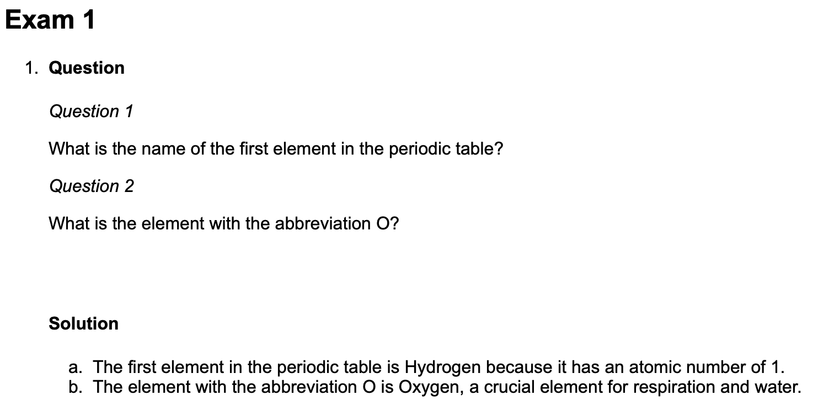
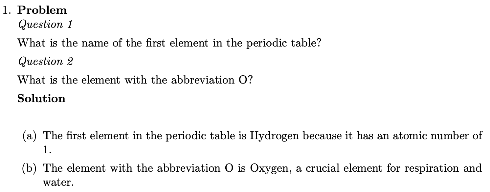
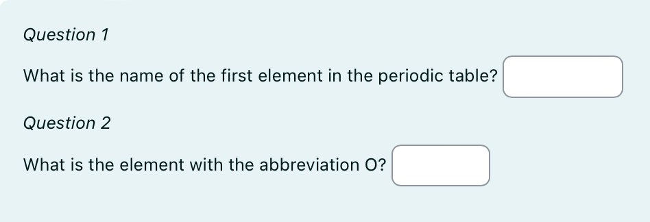

library(exams)
# Initialize lists for the questions, answers, solutions, types, explanations (tolerances are not needed if there are no numeric questions)
answers <- list()
solutions <- list()
types <- list()
explanations <- list()
# Define Question 1: first element in periodic table?
answers[[1]] <- "" # No predefined answer for string
solutions[[1]] <- "Hydrogen"
types[[1]] <- "string"
explanations[[1]] <- "The first element in the periodic table is Hydrogen because it has an atomic number of 1."
# Define Question 2: element with the abbreviation O?
answers[[2]] <- "" # No predefined answer for string
solutions[[2]] <- "Oxygen"
types[[2]] <- "string"
explanations[[2]] <- "The element with the abbreviation O is Oxygen, a crucial element for respiration and water."String Example
TODO: code chunks darstellung vereinheitlichen für alle examples, warning section hinzufügen/löschen
This is an exercise containing two text questions about the periodic table.
The whole example as an .Rmd-file can be downloaded here:
After conversion with R/exams the exercise looks like this for different output types.



Creating the List Structure
This section creates and fills the lists which contain the questions, answers, etc.. The answer list is empty, because no answer options are needed for text questions, as they are answered with a string.
The solution to the question, the type of question, as well as a more elaborate explanation are specified for each question.
Warning
The following code has to be placed within a code chunk in the .Rmd-file. See here ?????
Question Section
The next section contains the question text, including the marked spaces ##ANSWERi## for the answer fields and a necessary code section, which does some formating which is required for the later conversion. This is markdown text, which will appear bold/italic/etc. after conversion.
It also includes a code chunk, which converts the answers list to the necessary format.
Question
========
*Question 1*
What is the name of the first element in the periodic table? ##ANSWER1##
*Question 2*
What is the element with the abbreviation O? ##ANSWER2##
```{r questionlist, echo = FALSE, results = "asis"}
answerlist(unlist(answers), markup = "markdown")
```
Solution Section
In this section, additional information and/or the exact solutions can be given. In this case, the information which is stored in the explanations list is pasted here through this code chunk and displayed.
Solution
========
```{r solutionlist, echo = FALSE, results = "asis"}
answerlist(unlist(explanations), markup = "markdown")
```
Meta Information Section
This contains the meta information needed for conversion. See here ?????
The “source code” is written in markdown and contains inline R code.
Meta-information
================
exname: example_string
extitle: elements
extype: cloze
exsolution: `r paste(solutions, collapse = "|")`
exclozetype: `r paste(types, collapse = "|")`
exshuffle: TRUE
exversion: v1If the “code” above is evaluated, the section looks like this:
Meta-information
================
exname: example_string
extitle: elements
extype: cloze
exsolution: Hydrogen|Oxygen
exclozetype: string|string
exshuffle: TRUE
exversion: v1